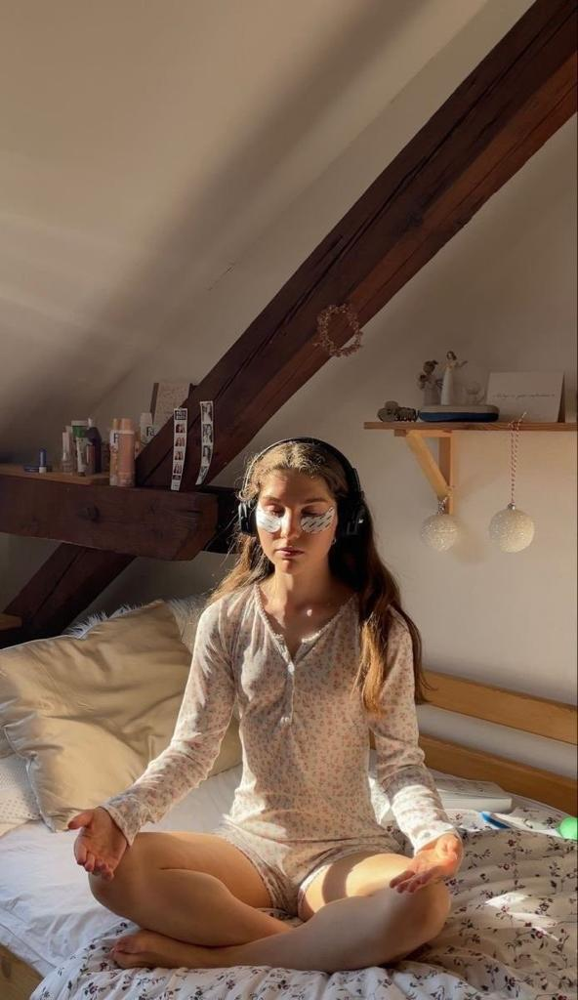

Flashcards Review
What is important self-care?
Self-care is essential for a number of reasons that improve each person's quality of life.
First, feeling better about oneself is significantly improved by practicing self-care.
Starting with a balanced diet, consistent exercise and getting enough sleep. These are some of the habits that can increase physical endurance, strengthen the immune system and decrease the risk of disease. This promotes complete balance by impacting both mental and physical health.
It includes not only physical health, but also psychological and emotional well-being. Participating in activities that promote relaxation, stress reduction and understanding of emotional needs can lead to a happier and higher quality life.
Why is important for teenagers?
It is critical to establish self-care practices in adolescents.
Establishing healthy habits at an early age not only provides a solid foundation for a health-free adult life, but also teaches future generations the importance of putting their own health first.
Also establish healthy habits like autonomy, as well as responsibility for maintaining fitness and health throughout life.